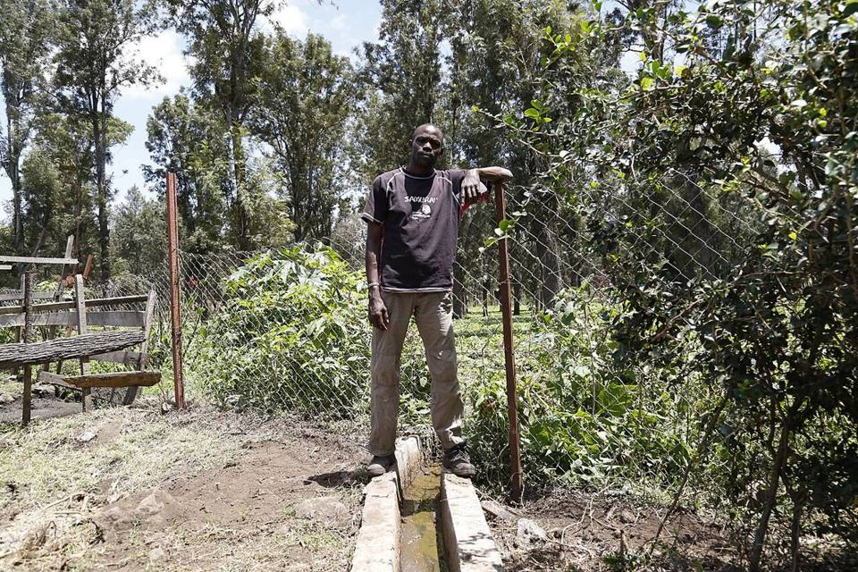
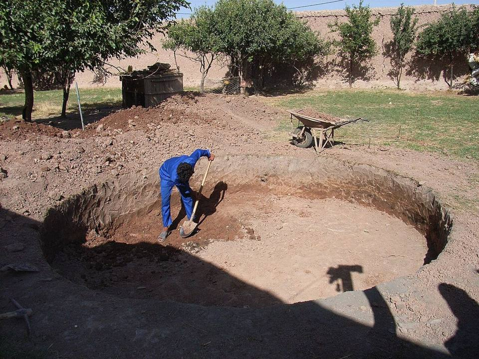
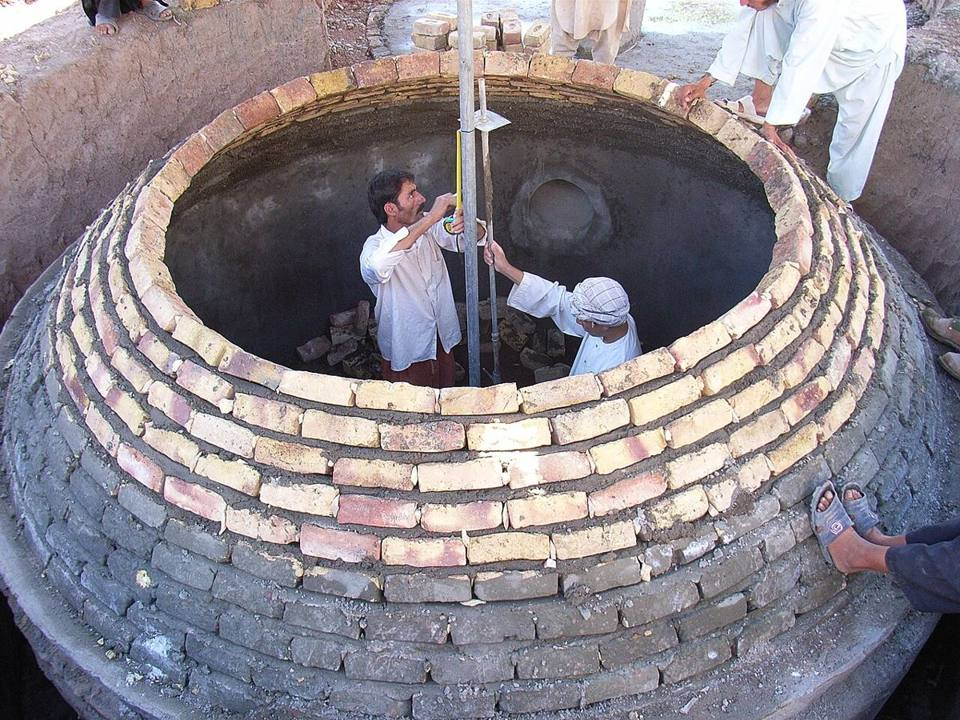
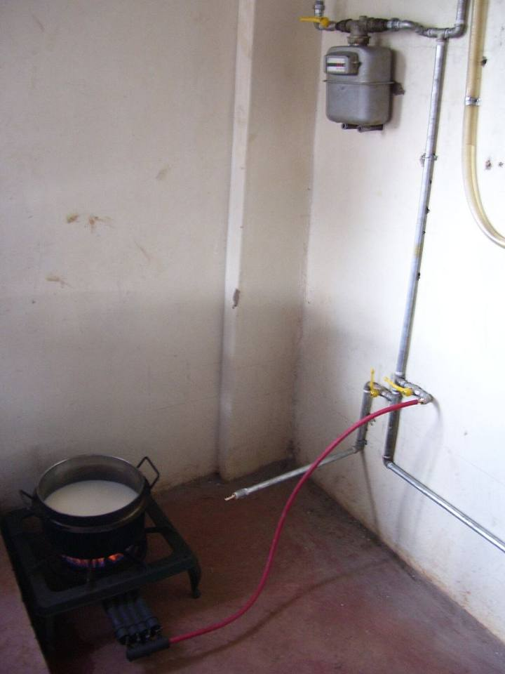
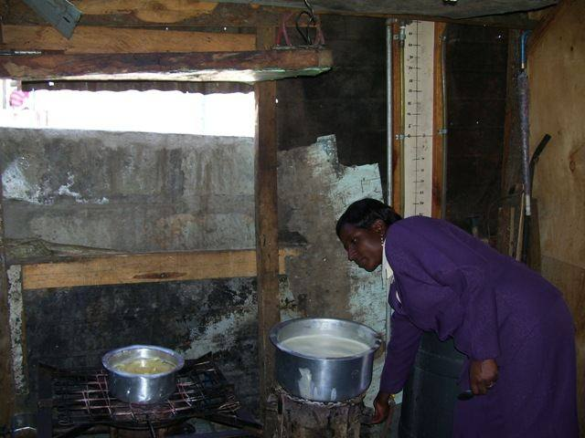
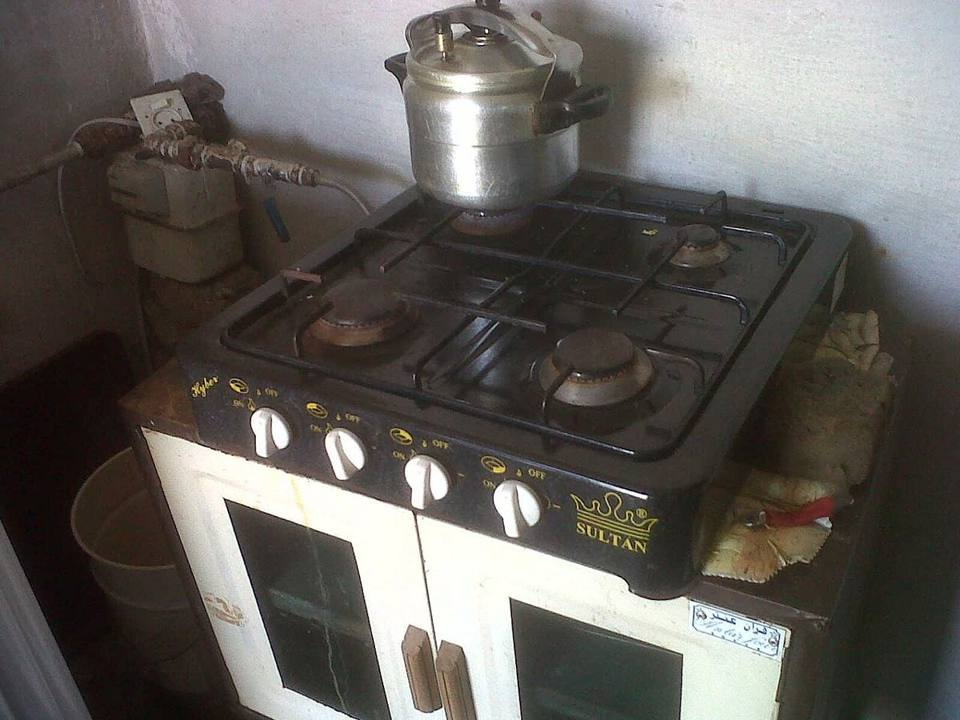
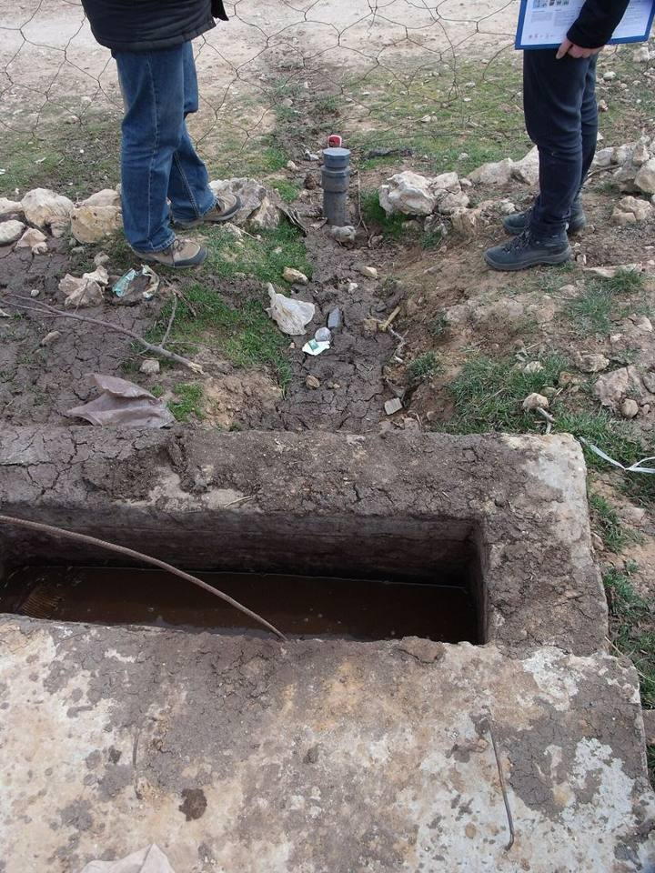
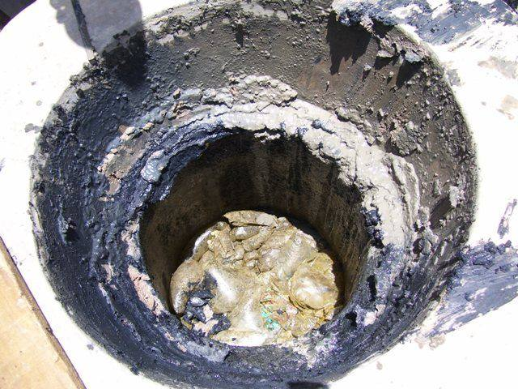
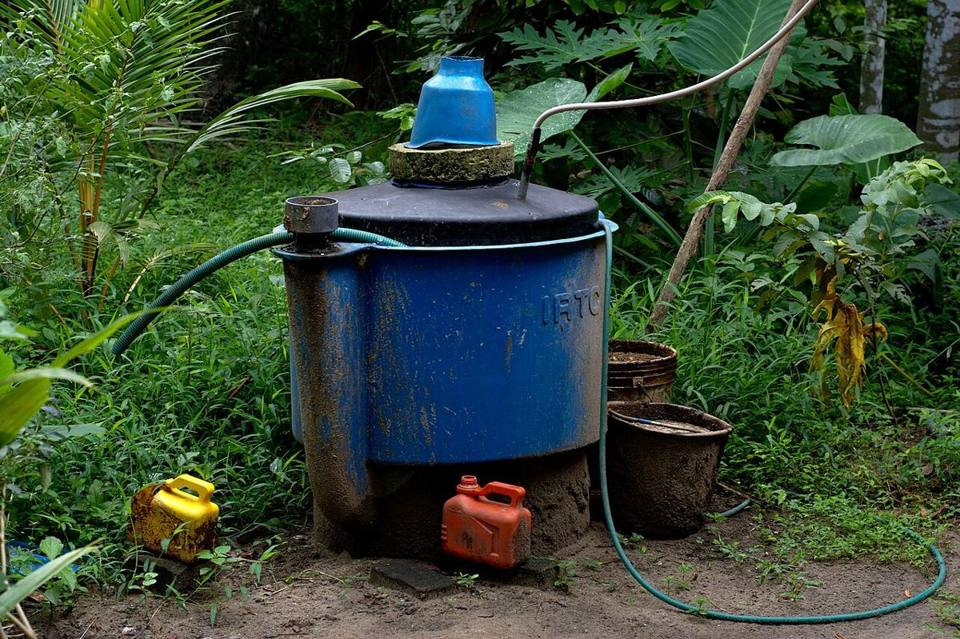

اختر نوع الهاضم
كل الهواضم تؤدي العمل نفسه: وعاء محكم الإغلاق تحلّل فيه البكتيريا الروث وتطلق الغاز [S11]. وتختلف التصاميم في ضغط الغاز، والمهارة اللازمة لبنائها، ومدة عمرها [S3].
| النوع | ضغط الغاز | مهارة البناء | العمر | الحجم | الأنسب لـ |
|---|---|---|---|---|---|
| خزان بلاستيكي صلب | منخفض، نحو 2 مليبار | منخفضة: سباكة | متوسط | حتى 6 م³ | بناء ذاتي من خزان ماء أو حاوية IBC |
| كيس أو أنبوب مرن | منخفض، نحو 2 مليبار | متوسطة: سباكة | متوسط؛ يتوقف على نوع الغشاء | يمكن ربط عدة وحدات | المواقع الدافئة؛ رخيص وجاهز، لكنه يحتاج إلى ظل وسياج |
| قبة ثابتة (بناء) | 60–120 مليبار | عالية: بناء وسباكة | طويل جدًا، أكثر من 20 سنة | 6–124 م³ | المزارع الدائمة مع بنّاء مدرَّب |
| أسطوانة عائمة | حتى 20 مليبار | عالية: بناء وسباكة ولحام | طويل؛ الأسطوانة هي نقطة الضعف | حتى 20 م³ | حيث تتوفر أعمال الحديد والصيانة |
| نظام جاهز | منخفض | منخفضة: اتباع دليل الصانع | يتوقف على المنتج | أحجام منزلية | أسرع بداية؛ تعرض HomeBiogas أنظمة من 975 دولارًا |


بالنسبة للأسر في اليمن، منحت دراستنا الكيس المرن والخزان الصلب أعلى الدرجات، ولا تقترح القبة الثابتة إلا حيث يتوفر بنّاء ماهر [S1].
يُشغَّل من يوتيوب (youtube-nocookie.com) فقط بعد الضغط على زر التشغيل. شاهد على يوتيوب
يُشغَّل من يوتيوب (youtube-nocookie.com) فقط بعد الضغط على زر التشغيل. شاهد على يوتيوب
يُشغَّل من يوتيوب (youtube-nocookie.com) فقط بعد الضغط على زر التشغيل. شاهد على يوتيوب
الخطوة 1 تحقق من توفر ما يكفي من الروث والماء
- يُغذّى تصميمنا يوميًا بـ25 كغ من روث الأبقار الطازج و25 لترًا من الماء. وعند نحو 40 لترًا من الغاز لكل كغ، ينتج نحو 1 م³ من الغاز الحيوي يوميًا [S1].
- تفيد الوكالة الدولية للطاقة بأن الهواضم المنزلية تنتج عادة نحو 1 م³ يوميًا، وهو ما يكفي لساعتين إلى ثلاث ساعات من الطهي من 20–30 كغ من الروث [S12].
- يستهلك الطهي 150–300 لتر من الغاز الحيوي للشخص في الوجبة الواحدة [S5]. اضرب ذلك في عدد أفراد الأسرة.
- الماء لا يقل أهمية عن الروث: يحتاج هذا التصميم إلى نحو 9 م³ من الماء سنويًا [S1].

.jpg){kind=link}
الخطوة 2 اختر الموقع
- ابنِ قريبًا من المطبخ لتقصير أنبوب الغاز [S2]، وقريبًا من حظيرة الحيوانات لتسهيل التغذية اليومية.
- اختر مكانًا دافئًا مشمسًا. فالهاضم غير المُدفّأ لا تزيد حرارته إلا 1–2 °م عن حرارة التربة حوله [S5]، ويضعف إنتاج الغاز دون 15 °م [S2].
- يحتاج الكيس المرن إلى مكان لا يتعرض فيه غشاؤه للتلف: ظلّله وأحطه بسياج [S4].
- أبعد الهاضم ومخلفاته عن آبار مياه الشرب وعن الأراضي التي تغمرها السيول.

.jpg){kind=link}
الخطوة 3 احسب الحجم
الحجم العامل = الخليط اليومي × زمن المكوث [S5].
- ينبغي ألا يقل زمن المكوث عن 15 يومًا في المناخ الحار و25 يومًا في المناخ المعتدل [S2]. ويستخدم تصميمنا لليمن 40–60 يومًا [S1].
- مثال: 50 كغ من الخليط يوميًا (0.05 م³) × 40–60 يومًا = 2–3 م³ من الحجم العامل [S1].
- اترك فراغًا فوق الخليط، وخطط لتخزين 40–60% من غاز اليوم، لأن الطهي يتم في أوقات محددة [S5].
الخطوة 4 ابنِ الهاضم أو ركّبه
اختر أحد ثلاثة مسارات. يناسب الخزان الصلب والكيس المرن البناء الذاتي، أما القبة الثابتة فتحتاج إلى بنّاء مدرَّب.
المسار أ: الخزان الصلب
استخدم خزانًا بلاستيكيًا متينًا محكم الإغلاق، مثل خزان ماء أو حاوية IBC. ركّب أنبوب إدخال، ومخرجًا للمخلفات المهضومة، ومخرجًا للغاز في الأعلى، كما في مخطط الخزان أعلاه. ظلّل الخزان أو اعزله ليحافظ على حرارته [S5].
يُشغَّل من يوتيوب (youtube-nocookie.com) فقط بعد الضغط على زر التشغيل. شاهد على يوتيوب
المسار ب: الكيس أو الأنبوب المرن
يعمل كيس بلاستيكي ملحوم حراريًا هاضمًا وخزانًا للغاز معًا، ويُثبَّت المدخل والمخرج على الكيس نفسه [S4]. وهو رخيص وجاهز، لكن عمره أقصر ويتلف بسهولة، فضعه في مكان آمن لغشائه وظلّله وأحطه بسياج [S4].

.jpg){kind=link}
يُشغَّل من يوتيوب (youtube-nocookie.com) فقط بعد الضغط على زر التشغيل. شاهد على يوتيوب
المسار ج: القبة الثابتة (لبنّاء مدرَّب فقط)
هاضم مبني تحت الأرض بقبة غاز ثابتة. عندما يتجمع الغاز يدفع الخليط إلى حجرة التمدد، فيتولد الضغط الذي يرسل الغاز إلى المطبخ [S2، S3]. قد يعمل 20 سنة أو أكثر، لكن القبة يجب أن تكون محكمة ضد تسرب الغاز، وهذا يتطلب مواد عزل خاصة ومهارة عالية، والتسرب شائع عند سوء البناء [S3].

.jpg){kind=link}
يُشغَّل من يوتيوب (youtube-nocookie.com) فقط بعد الضغط على زر التشغيل. شاهد على يوتيوب
الخطوة 5 جهّز المدخل والمخرج والخلط
- اخلط الروث بالماء بنسبة 1:1 في خزان الإدخال حتى ينساب [S1].
- قطّع المخلفات العضوية الأخرى واخلطها بالماء أو بالمخلفات المهضومة قبل التغذية [S2].
- اترك الرمل والحصى يترسبان أولًا، فما يصل منهما إلى الهاضم يجب إزالته لاحقًا [S2].
- وجّه المخرج إلى حفرة تخزين مغطاة أو قناة إلى الحقل.

.jpg){kind=link}
الخطوة 6 ركّب خط الغاز والمرشح والتخزين
- استخدم أنابيب الحديد المجلفن أو PVC. وادفن أنابيب PVC لأن الشمس ولعب الأطفال يتلفانها [S6].
- اجعل ميل الأنبوب 1% على الأقل ليعود الماء إلى الهاضم. وعند أي نقطة منخفضة ركّب مصيدة ماء وأفرغها بانتظام [S6].
- ضع الصمامات في أماكن يسهل الوصول إليها [S6].
- يحتوي الغاز الحيوي على 0.01–0.4% من كبريتيد الهيدروجين (H₂S)، وهو سام ويسبب تآكل المعادن [S7]. مرّر الغاز عبر مرشح، مثل أكسيد الحديد أو صوف الفولاذ، قبل الموقد (انظر الفيديو).
- خزّن 40–60% من غاز اليوم في كيس أو خزان غاز [S5].

.jpg){kind=link}
يُشغَّل من يوتيوب (youtube-nocookie.com) فقط بعد الضغط على زر التشغيل. شاهد على يوتيوب
الخطوة 7 اختبر التسرب وابدأ التشغيل
- قبل ردم الخنادق، اضخ الهواء في الأنبوب المغلق حتى 2.5 ضعف أعلى ضغط غاز للوحدة. فإن نقص الضغط خلال ساعات قليلة، ادهن كل وصلة بماء وصابون: الفقاعات تكشف التسرب [S6].
- املأ الهاضم ولقّحه بالبكتيريا، مثلًا بروث أبقار طازج [S2].
- يختلط الغاز الأول بالهواء الذي كان في الداخل، والغاز الحيوي المختلط بالهواء قد ينفجر [S7]. أطلق الغاز الأول في الهواء الطلق بعيدًا عن أي لهب قبل إشعال الموقد.
- يزداد إنتاج الغاز مع تكاثر البكتيريا. ويكون ذلك أبطأ في الطقس البارد لأن الإنتاج يضعف دون 15 °م [S2].

.jpg){kind=link}
الخطوة 8 غذِّه وراقبه كل يوم
- غذِّ الهاضم بالكمية نفسها كل يوم، فالهواضم تعمل أفضل مع التغذية المنتظمة [S2].
- سجّل كيلوغرامات الروث ولترات الماء وحرارة الخليط والغاز الذي تستخدمه. وخطة التجربة في دراستنا تطلب هذه السجلات تحديدًا [S1].
- إذا خرج الغاز فقاعات من المدخل ولم يصل إلى الموقد إلا القليل، فالأرجح أن طبقة سميكة من القشرة قد تكونت [S7].
- نظّف معدات الغاز بانتظام لمنع التآكل والتسرب، وأزل الحصى المترسب، وتوقع إفراغ الهاضم كل 5–10 سنوات [S2].
الخطوة 9 اطهُ بالغاز واستخدم المخلفات المهضومة
- تستهلك الشعلة المنزلية نحو 0.35 م³ في الساعة، فيعطي المتر المكعب نحو ثلاث ساعات من الطهي [S1].
- استخدم موقدًا مصنوعًا للغاز الحيوي أو معدّلًا له، واضبط دخول الهواء للحصول على لهب ثابت [S8].
- المخلفات المهضومة معقمة جزئيًا فقط وقد تحمل الأمراض [S2]. خزّنها مغطاة وتعامل معها بحذر قبل استخدامها في الحقول.

.jpg){kind=link}

.jpg){kind=link}
الخطوة 10 عالج المشكلات الشائعة
| المشكلة | السبب المرجح | ما العمل |
|---|---|---|
| لا غاز بعد التشغيل | برودة شديدة أو عدم التلقيح | لقّح بروث أبقار طازج [S2]؛ حافظ على دفء الهاضم [S5] |
| يتسرب الغاز من المدخل؛ ضغط منخفض عند الموقد | طبقة قشرة سميكة [S7] | فتّت القشرة؛ وغذِّ بانتظام [S2] |
| ينخفض الضغط خلال الليل | تسرب في الأنبوب أو الوصلات | اختبر كل وصلة بماء وصابون [S6] |
| اللهب يرتعش؛ ماء في الأنبوب | تكثف الماء في نقطة منخفضة | أفرغ مصيدة الماء وتحقق من ميل 1% [S6] |
| رائحة كريهة؛ بقع سوداء على المعادن | كبريتيد الهيدروجين [S7] | جدّد مادة المرشح |
| غاز أقل بكثير في الشتاء | انخفاض الحرارة | متوقع دون 15 °م [S2]؛ اعزل الهاضم، مثلًا بطبقات من سيقان الذرة أو السماد [S10] |
| بلاستيك أو رمل في الداخل | نفايات مع التغذية | امنع دخول البلاستيك؛ وأزل الحصى [S2] |

.jpg){kind=link}
السلامة
- الغاز الحيوي المختلط بالهواء قد يكوّن خليطًا متفجرًا، وقد تشتعل الحرائق حتى خارج نطاق الانفجار [S7].
- لا تدخل أبدًا إلى هاضم أو مكان مغلق لتخزين الغاز. فقد تسبب غاز الروث في حوادث مميتة في تربية الحيوانات [S7].
- هَوِّ أي مكان مغلق قد يتجمع فيه الغاز، واستخدم فيه أجهزة إنذار الغاز ووسائل حماية التنفس [S7].
- لا لهب ولا تدخين ولا شرر قرب الهاضم أو المدخل أو المخرج أو كيس الغاز [S7].
- أبعد الأطفال: أحط الأكياس والمداخل بسياج، وادفن الأنابيب البلاستيكية [S4، S6].
- اطلب من فني مؤهل فحص تخزين الغاز والأنابيب والتهوية والحماية من الضغط قبل الطهي [S1].
يُشغَّل من يوتيوب (youtube-nocookie.com) فقط بعد الضغط على زر التشغيل. شاهد على يوتيوب
أساليب واختراقات أحدث
- الأنظمة المنزلية الجاهزة. أنظمة جاهزة للتركيب مثل HomeBiogas، بسعر يبدأ من 975 دولارًا [S13]، وهواضم Sistema.bio الأنبوبية [S14] تصل جاهزة للتجميع.
- القباب الجاهزة من الألياف الزجاجية. صار بعض المصنّعين يبنون هواضم القبة الثابتة من الألياف الزجاجية، ويمكن إنتاج وحدة حسب الطلب في يومين وتركيبها بعد النقل [S3].
- العزل للمواسم الباردة. اختبرت تجربة في يونان بالصين عامي 2012–2013 طبقات من سيقان الذرة والسماد لعزل هواضم قبة ثابتة سعتها 10 م³ [S10].
- حقائب الغاز الحيوي. أكياس محكمة تُملأ من هاضم مركزي بمعادلة الضغط، فيستطيع الجيران حمل الغاز إلى منازلهم [S9].
- هواضم للمزارع الصغيرة. يطوّر مشروع Economad في مؤسسة Rothamsted Research هضمًا لاهوائيًا مصممًا للمزارع الصغيرة والمتوسطة [S15].


يُشغَّل من يوتيوب (youtube-nocookie.com) فقط بعد الضغط على زر التشغيل. شاهد على يوتيوب
يُشغَّل من يوتيوب (youtube-nocookie.com) فقط بعد الضغط على زر التشغيل. شاهد على يوتيوب
المصادر
فُتحت جميع المصادر وتُحقق منها في 28 نوفمبر 2026.
| المعرّف | المصدر | ما يدعمه |
|---|---|---|
| S1 | BioGas Inc., household biogas feasibility study for Yemen (2026) | كمية التغذية اليومية، وإنتاج الغاز، وزمن المكوث، والحجم العامل، واستهلاك الموقد، وسجلات التجربة |
| S2 | SSWM / Tilley et al. (2014), Biogas Reactor factsheet | زمن المكوث، والقرب من مكان الاستخدام، والتلقيح بروث الأبقار، وضعف الإنتاج دون 15 °م، والصيانة، وسلامة المخلفات المهضومة |
| S3 | energypedia, Fixed-dome Biogas Plants | مقارنة أنواع الهواضم؛ تصميم القبة الثابتة؛ القباب الجاهزة من الألياف الزجاجية |
| S4 | energypedia, Balloon Digester for Biogas Plants | هواضم الأكياس المرنة: التصميم والعمر وخطر التلف |
| S5 | energypedia, Sizing of the Biogas Plant | حجم الهاضم، وحرارته، ونسبة تخزين الغاز، واستهلاك الطهي |
| S6 | energypedia, Biogas Gas Pipe, Valves and Accessories | مواد الأنابيب، والميل، ومصائد الماء، واختبار التسرب |
| S7 | energypedia, Operation of a Biogas Plant | تركيب الغاز، ومخاطر الانفجار والغاز، والقشرة الطافية |
| S8 | energypedia, Biogas Appliances | مواقد وشعلات الغاز الحيوي |
| S9 | energypedia, Biogas Backpack | أكياس غاز محمولة تُملأ من هاضم مركزي |
| S10 | Initiative Développement (2013), Insulation of Fixed-Dome Biogas Digesters in China | عزل الهواضم بطبقات من سيقان الذرة والسماد العضوي |
| S11 | US EPA AgSTAR, How does anaerobic digestion work? | أساسيات العملية والغاز الحيوي والمخلفات المهضومة |
| S12 | IEA, Outlook for biogas and biomethane (citing SNV 2019) | إنتاج منزلي نحو 1 م³ يوميًا |
| S13 | HomeBiogas, household systems | نظام جاهز؛ السعر من 975 دولارًا |
| S14 | Sistema.bio, biodigesters | هواضم أنبوبية جاهزة |
| S15 | Rothamsted Research, Economad (video) | هضم لاهوائي مصمم للمزارع الصغيرة والمتوسطة |
حقوق الصور
- Bio-gas in Tanzania (9297).jpg: Russell Watkins/Department for International Development, CC BY 2.0
- Digging the hole for the digester (4834074716).jpg: SuSanA Secretariat, CC BY 2.0
- Plastic tank digester.jpg: BiogasME, CC BY-SA 4.0
- Plastic tube digester.jpg: BiogasME, CC BY-SA 4.0
- Floating drum digester.jpg: BiogasME, CC BY-SA 4.0
- Bag digester - 2 (4644386374).jpg: SuSanA Secretariat, CC BY 2.0
- Digester dome construction (4833631219).jpg: SuSanA Secretariat, CC BY 2.0
- Mixing at the inlet (6593867591).jpg: SuSanA Secretariat, CC BY 2.0
- Biogas set up in detail (5363273033).jpg: SuSanA Secretariat, CC BY 2.0
- Naivasha Biogas kitchen (4427168730).jpg: SuSanA Secretariat, CC BY 2.0
- Cooking with biogas stove (14004617377).jpg: SuSanA Secretariat, CC BY 2.0
- Biomass slurry outlet to lead it directly to the fields (6955946985).jpg: SuSanA Secretariat, CC BY 2.0
- Naivasha maintainance of biogas plant (4426405729).jpg: SuSanA Secretariat, CC BY 2.0
- Portable Biogas plant.jpg: Kevinsooryan, CC BY-SA 4.0